Case Study | Improving the Doctor Web Portal to enhance learnability and work proficiency.
ROLE:
UX Designer
TIMELINE:
April - June, 2023
DELIVERABLES:
Website Design
Introduction
A few years ago, Diag Pro was a tool that doctors collaborating with Diag used to view patients' test results only. Over time, due to real needs of doctors, Diag has been introducing more features. Until now, doctors can: • Give test orders (or prescriptions) to patients online. • View patient results online. • Check the test library when consulting patients online. • View created orders (prescriptions) of every month online.
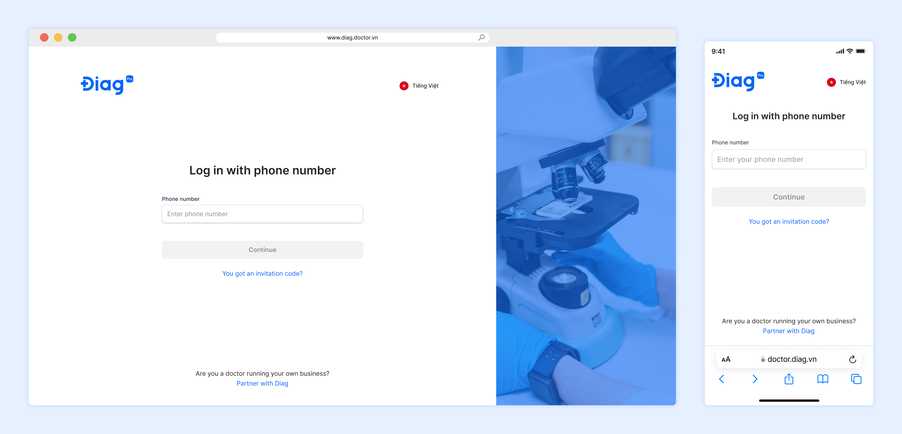
The Problem
In March 2023, the product owner reviewed data from Mix Panel and made an interesting discovery: "70% of doctors created their first digital test order for a patient one month after being onboarded by the sales team of Diag. However, at that time, the doctors barely remembered how to do so."- whispered by the product owner.
With this insight in mind, the Customer Success team met with doctors to learn more about their problems and needs. During these meetings, doctors expressed their concerns: "We are unsure of how to create new orders for patients and use other features. We have no time to explore these features because we are always busy with patients. Therefore, we prefer to give test orders on paper instead."
Goal
Based on these insights, the product team has decided to improve the website's user experience for doctors who use the website infrequently or for the first time.
For product: • Making the homepage more intuitive and interesting for doctors when they log in for the first time so that they can easily use any function without hesitation.
For Business: • Attracting more doctors to join Diag by improving the service and tool. • Encouraging more doctors to use the website instead of handwritten methods.
Design process
1. Design process
Step 1: Discussed with Product team to understand the problem. Step 2: Determined user user personas. Step 3: Ideated and conducting the secondary research. Step 4: Created lo-fi wireframes, presenting them to the entire product team, and gathering feedback. Step 5: Created mockups and handing them off to the Scrum team. Meanwhile, following up and troubleshooting any abrupt problems. Step 6: Reviewed the UI after the feature has been deployed.
2. Final Design
Before:
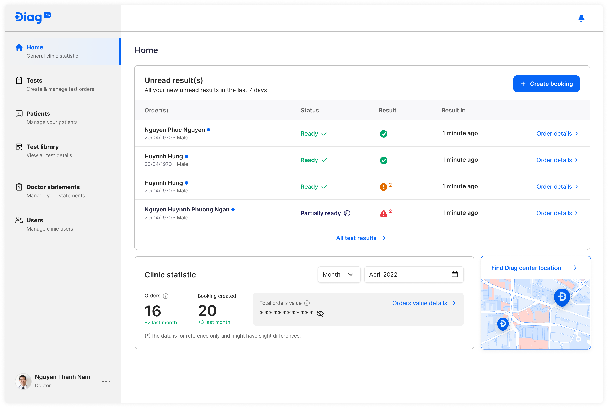
After:
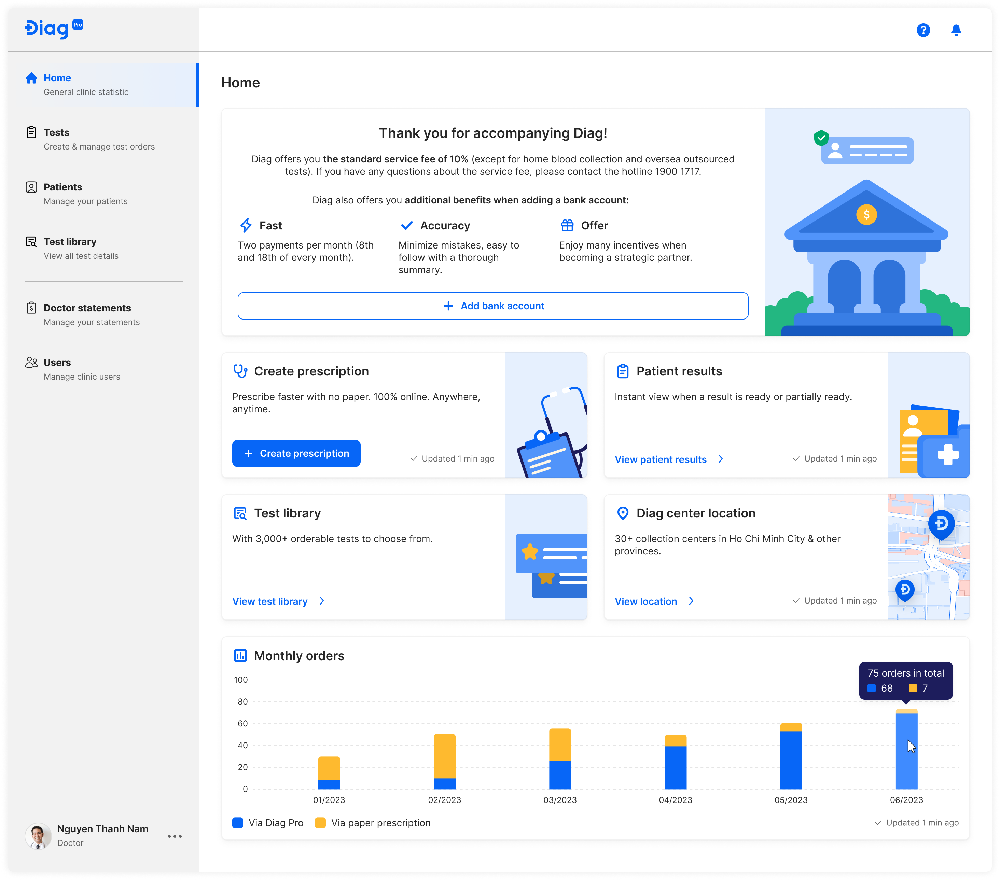
Result
The recent design improvements have garnered positive feedback from both the internal and external members of the product team.
However, to ensure continued success, it is essential to maintain close communication with doctors and receive their valuable feedbacks. By actively listening to their insights and incorporating their suggestions, we can further enhance the design to better meet their needs and expectations. Continuous improvement is key to delivering an exceptional user experience for our product.
Implementing SLAs and OLAs to Help Call Agents Track Tasks and Improve Accountability.
ROLE:
UX Designer
TIMELINE:
May - July, 2022
DELIVERABLES:
Website Design
PROJECT OVERVIEW:
The SLA/OLA feature is part of a digital product called Merchant, one of several tools within an ecosystem designed for call centres. This feature was developed to help call centre agents manage their tasks more effectively. It displays the remaining time directly on the interface, showing both the time agreed upon internally to resolve each inquiry and the time agents have left to meet those expectations for callers representing merchants. The project was delivered in collaboration with a cross-functional team, including a product owner, developers, and quality assurance specialists.
Introduction
During my time at Aperia, I worked as a UX Designer on a digital product called Merchant. Merchant is one of the applications within a call centre ecosystem called Client360. In the diagram below, I've illustrated how Merchant fits into the Client360 ecosystem.
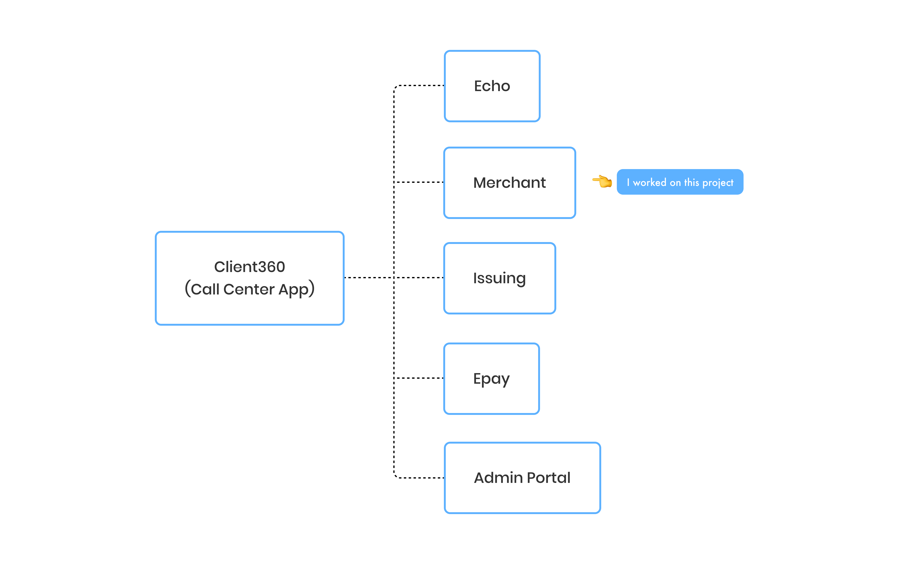
Context
Assume that one day, the Manager of KFC calls Bank of America to inquire about the current transaction because something appears to be incorrect. Because Bank of America outsourced the call center service, all calls will be received and answered by call center agents via Client360.
When the agent answers the phone, the KFC manager describes the nature of the call and requests assistance. The agent will enter the call information into the Merchant CRM and create an inquiry. When the inquiry is successfully created, it will be handled by a specific team.
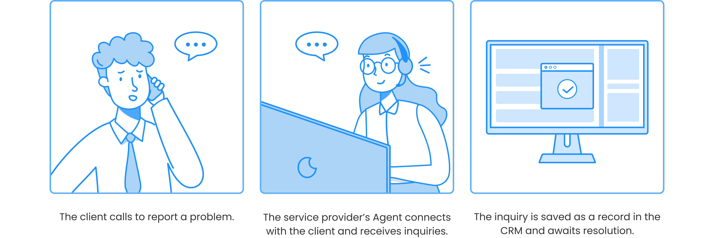
The Problem
Each call centre agent receives up to 50 inquiries per day, contributing to hundreds of unresolved cases stored in the Merchant CRM. These inquiries vary in priority. Some are urgent and require immediate attention, while others can be addressed later. However, agents sometimes overlook these distinctions, leading to delays that can negatively impact business performance.
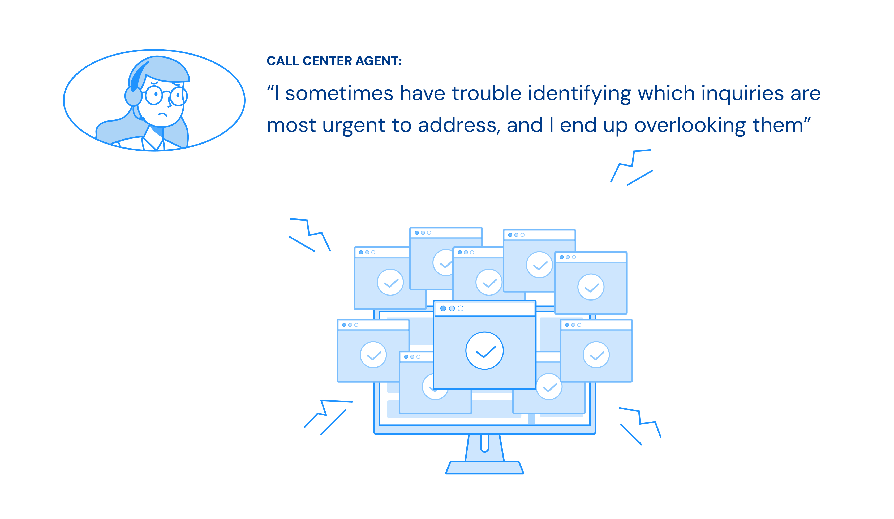
Goal
The goal was to ensure that agents consistently resolve inquiries based on priority, starting with the most urgent. To address this, I collaborated closely with the product owner after receiving the problem statement from our client. Together, we explored possible solutions through extensive desk research and discussions. Ultimately, we decided to implement an SLA and OLA feature, similar to those used in other products on the market, to address the problem.
But, what are SLA and OLA?
• SLA (Service Level Agreement) is a formal agreement between the client (Merchant) and the service provider. It ensures that the provider's agents complete their tasks within a specified timeframe. If they fail to do so, they may face penalties.
• OLA (Operational Level Agreement) is an internal agreement within a team. It defines the expected timeframes for completing tasks to support the commitments made in the SLA.
So, what did I do exactly?
To solve the problem, I first worked closely with the Product Owner to clarify the client's ambiguous requirements. We aligned on the goals and defined what success would look like.
Next, I conducted secondary research to understand how other products in the market handled similar challenges, using those insights to guide our approach.
Once the direction was clear, I sketched out low-fidelity wireframes to visualize the SLA/OLA feature and presented them to stakeholders for feedback. This helped us align early and make informed design decisions.
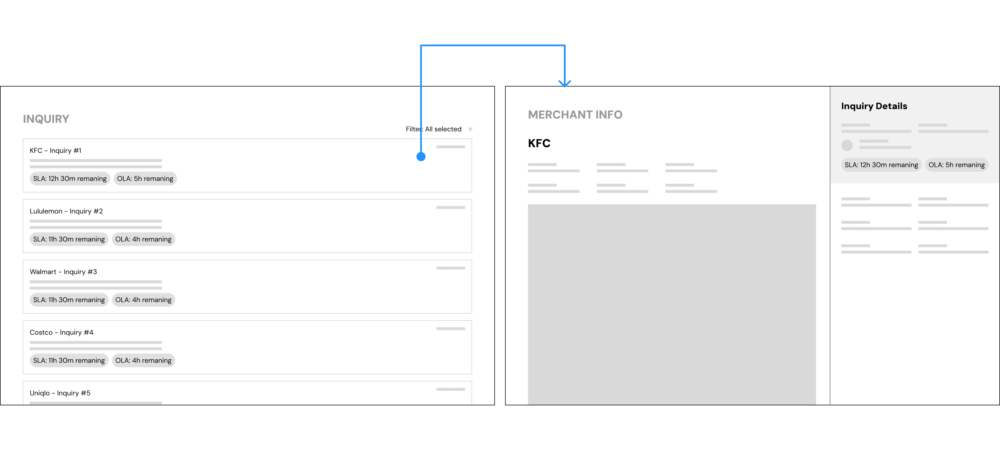
Image 1: The wireframe above shows the concept I designed based on discussions with the Product Owner and client feedback.
I then designed the final high-fidelity mockups, integrating the SLA/OLA feature directly into the Merchant CRM interface to help agents prioritize their tasks more effectively.
After handing off the designs to the scrum team, I stayed involved throughout the development process by following up regularly and offering support whenever the team encountered questions or blockers.
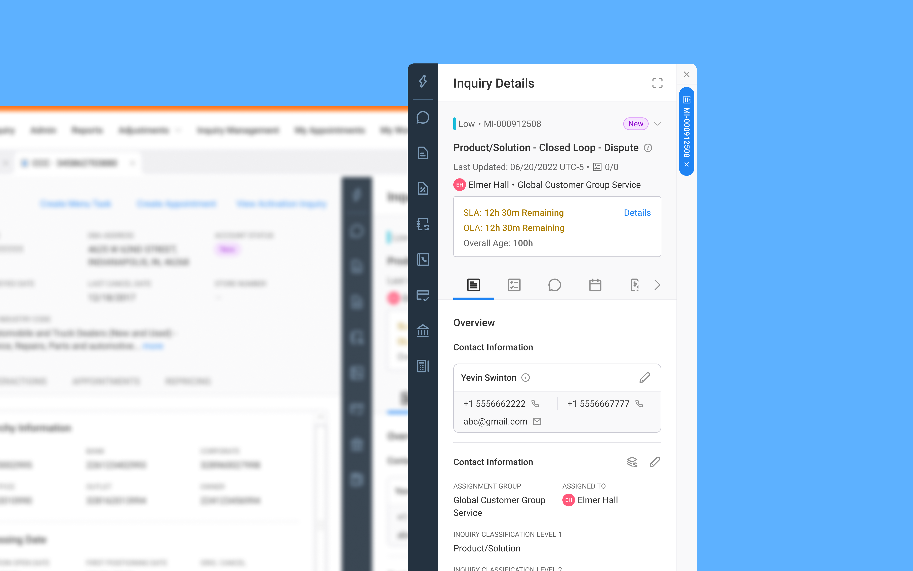
Image 2: The final design of the SLA/OLA feature was integrated and visualized within the Merchant CRM interface.
Result
The client gave positive feedback on the feature, saying the design was clear and easy to spot while working on tasks. It also helped boost the agents' confidence because they knew they had a tool to support them in managing their workload.
Challenges and Limitations
One of the main challenges I faced was interpreting and clarifying ambiguous requirements from the client. The initial problem statement lacked detail, so I worked closely with the Product Owner to dig deeper and ensure we were solving the right problem. Another key challenge was defining clear logic for the SLA/OLA feature. Since the feature impacted how agents prioritized tasks, it was crucial to make sure the behavior was well-defined and aligned with business expectations.
A major limitation of the project was that we were unable to gather direct user feedback on the SLA/OLA feature. Due to time and access constraints, we had to rely on stakeholder insights and secondary research to guide our design decisions.
Bridging the Gap: Engage Urban Youth in Ottawa Recreation
ROLE:
UX Researcher
TIMELINE:
8 months - From September 2024 to April, 2025
DELIVERABLES:
Research findings and service design solutions
PROJECT OVERVIEW:
The City of Ottawa has raised concerns about the low participation of youth in its recreational programs. To investigate this issue, this study explored the barriers preventing youth aged 18–25 in five priority Ottawa neighbourhoods from engaging with city-run recreation programs. Our findings reveal three primary challenges: a lack of accessible and affordable recreational spaces, a lack of flexibility in programming, and ineffective communication strategies. In response, this research introduces a three-phase intervention aimed at improving engagement. The project was conducted collaboratively by Chuong Hoang, Emma Kiesekamp, Maria Montano, Amaan Ahmedabadi, and Harsh Saini.
Visual Summary of Research Study
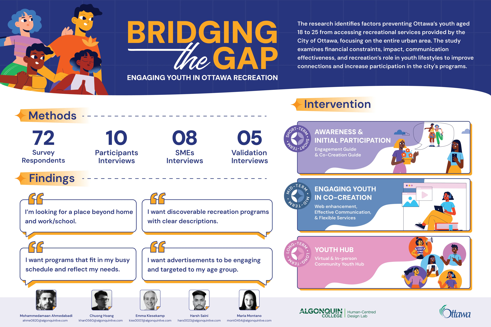
1. Why do we start this project?
In September 2024, Brent McQueen, Molly Cook, and Carlos Ramos from the Recreation, Cultural and Facility Services (RCFS) of the City of Ottawa expressed concerns about the youth who are not actively participating in recreational activities provided by the city in their community centres.
This research focuses on youth in five urban neighbourhoods of Ottawa: Britannia, Carlington, Lower Town, Overbrook, and Sandy Hill. These neighbourhoods are considered high priority because the gap between youth and recreation programs is larger than in other neighbourhoods in the urban areas according to our client.
This study focuses on youth aged 18 to 25, regardless of their enrolment status in a post-secondary institution.
What's next...
A follow-up literature review highlighted the relationship between newcomers to Canada and recreation spaces/programs. While many newcomers are eager to participate in sports and physical activities, they often encounter unique challenges, particularly with time and cost.
Research goals and objectives
The goal of this study is to examine the factors that discourage youth aged 18 to 25 from enrolling in municipal recreation programs. The research question: What factors facilitate an interactive and social experience amongst urban youth?
In doing so, the research objectives are to:
Explore if the current communication channels resonate with post-secondary youth.
Understand what youth are looking for when it comes to organized recreation/leisure activities.
Explore the values youth desire from recreational activities to help positively impact their lives.
Understand the extent to which financial barriers influence youth participation in recreational activities.
Understand how leisure activities fall into youths' lifestyles.
2. Research Methodology
A mixed-methods approach was used to collect both qualitative and quantitative data from youth aged 18 to 25 residing in urban Ottawa. The study was divided into three phases:
Phase 1: A screener survey
Phase 2: Semi-structured interviews with youth participants and Subject Matter Experts (SMEs).
Phase 3: Design validation interviews with youth and SMEs.
3. Findings
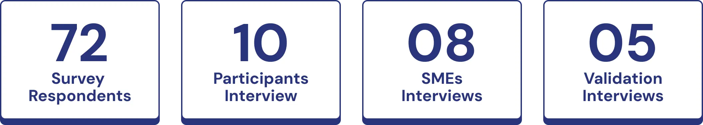
Through our research, which included 72 surveys and 10 participant interviews, along with 8 SME additional interviews, we identified key pain points experienced by our users.
Persona of the youth
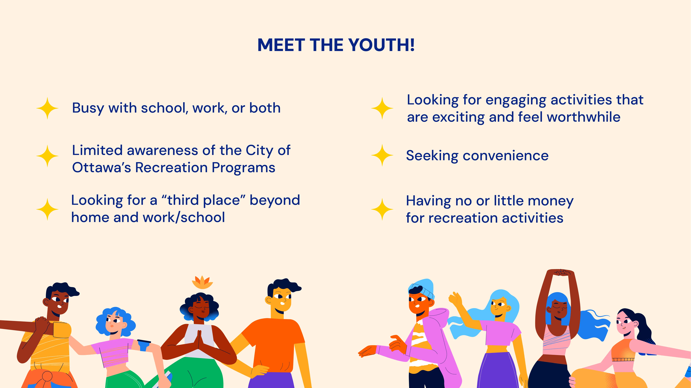
Factors hinder youth's participation
Our findings revealed three major gaps between the city and its youth:
Social Spaces: Many recreational spaces are not easily accessible or budget-friendly, making participation difficult.
Flexibility: Youth often have unpredictable schedules due to school and work. Programs that lack flexibility create barriers to participation.
Awareness: There is limited awareness of available programs. Youth mainly rely on social media and word-of-mouth, yet current outreach strategies don't effectively use these channels.
4. Intervention
Based on the insights and from our system map analysis, we identified that the most immediate and effective solution lies in reimagining the role of community centers.
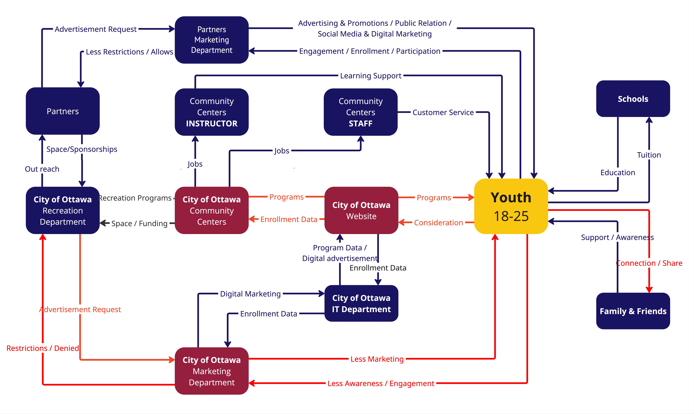
System map illustrating the principal actors and their relationships. Pain points to be improved are highlighted in red
A Scalable Three-Phase Intervention Framework
Our proposed solution is a scalable, three-phase approach designed for long-term impact. It empowers community centers to better engage youth through co-creation, active participation, and the cultivation of a strong sense of belonging.
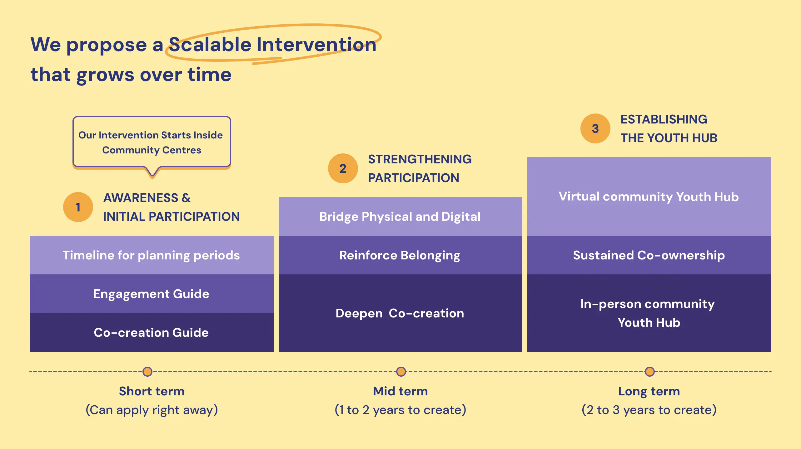
Phase 1: Awareness & Co-Creation
The first phase begins with the implementation of a practical and adaptable Youth Engagement Toolkit, designed to equip community centers with the tools they need to meaningfully connect with youth and co-create relevant recreational offerings.
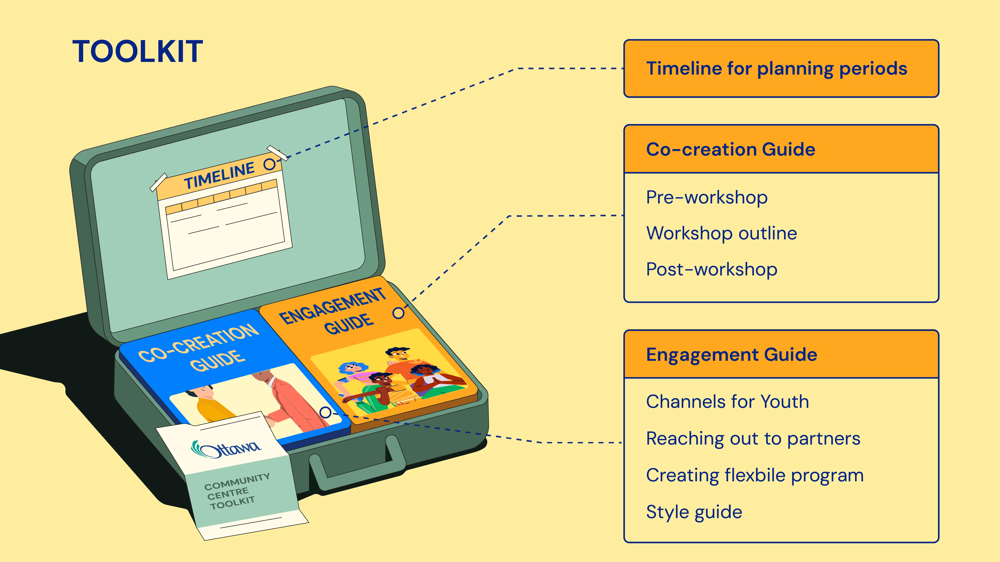
Phase 2: Strengthening Participation
As co-creation initiatives gain momentum, the youth engagement group grows stronger, inviting more young people to get involved. Youth begin to contribute ideas for improvements to infrastructure, equipment, virtual platforms, and communication strategies within their community centres.
Phase 3: Establishing the Youth Hub
The final phase establishes a true "Third Place" for youth in Ottawa—a space that exists beyond home and school/work, where young people feel welcomed, seen, and connected.
The following link provides a detailed description of the toolkit guide and its potential for scalability: View Youth Hub Framework
5. Limitations
The main constraint within this research was the researchers' inability to conduct interviews with participants who took part in the City of Ottawa recreational programs. The brief collection period and narrow scope of the study limited researchers from conducting an extensive analysis.
6. Learnings
This research study was my first experience conducting an end-to-end research process, and it provided a clear understanding of how to move from vague problem areas to actionable design solutions. I learned how to plan a research study in alignment with Research and Ethics Board (REB) guidelines, ensuring ethical and responsible practices throughout. Most importantly, I learned how to design service design interventions based on research insights to effectively address complex problems.
A Centralized Calendar for Algonquin College Students
ROLE:
UX Research
TIMELINE:
September - December, 2024
DELIVERABLES:
Research Findings and Recommendations
PROJECT OVERVIEW:
This project was part of the UX Research course of the Interdisciplinary Human-Centred Design Program at Algonquin College. Its primary goal was to apply research skills to explore the experiences of new Algonquin students in managing academic and personal tasks using multiple college calendars. The project was conducted collaboratively by Chuong Hoang, Amaan Ahmedabadi, Maria Montano, and Pragya Gouti.
1. Why do we start this project?
1.1 The Problem
The onboarding process plays a vital role in helping new students at Algonquin College transition smoothly, especially international students. Algonquin College offers various calendars to help students track academic and campus events. However, new students may struggle to familiarize themselves with multiple college-provided calendars from the beginning.
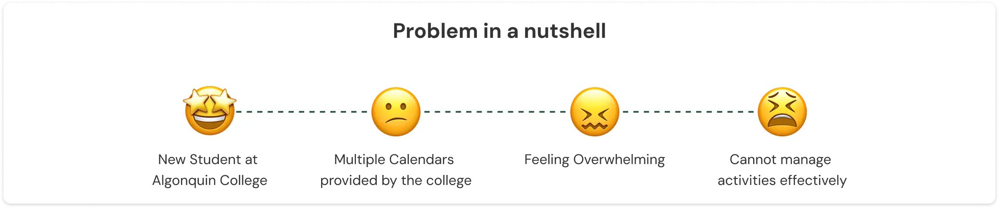
1.2 Goals and objectives
This study explores the issue by examining task planning habits, analyzing user experiences with multiple calendars, identifying pain points and barriers, and proposing solutions. This study aims to answer the question: "What experiences do new students at Algonquin College have when navigating and using multiple college-provided calendars to manage their academic activities, extracurricular engagements, social events, and personal tasks?"
Objective 1: Identify the method students use to manage schedules, their preferences, usage frequency, and awareness of college calendars.
Objective 2: Explore student's experiences with multiple calendars, including tool choices, challenges, and key features they rely on.
Objective 3: Assess student's views on college calendars, focusing on difficulties, coping strategies, and suggestions for improvement.
2. Methods and participants
2.1 Methods
Survey and semi-structured interview were used in this study to collect quantitative and qualitative data, respectively.
Why Survey?
Was used to collect quantitative data about users.
Out of 127 survey responses, 102 useful responses were analyzed.
Why interview?
Was used to collect qualitative data about users.
12 interviews were scheduled, both in-person and virtually, with 10 successfully conducted.
2.2 Participants
The participants for this research are the new Algonquin College students who are in their first semester (level 1).
3. Findings and Recommendations
Finding 1: Students struggle with using multiple tools to manage their tasks and prefer an integrated platform.
Students struggle with managing tasks across multiple disconnected tools, leading to inefficiencies and missed academic deadlines or important events.
Recommendation: A centralized calendar system should be implemented to help students arrange their tasks and activities. This system should incorporate institutional tools together with personal calendars such as Google Calendar and Apple Calendar.
Finding 2: Students rely on certain calendar features to manage their tasks effectively.
Students highly value platforms that enhance task management, with Pulse standing out for its "Upcoming" visual tracker, notifications, and reminders.
Recommendation: To boost student engagement and productivity, existing platforms or a future centralised system should integrate visual tools like task progress graphs, timeline views, and smart reminders.
Finding 3: Students are busy balancing their academic and personal lives.
Students juggle academic responsibilities, extracurricular activities, and social events. Their scheduling approach prioritises flexibility, emphasising daily and weekly planning over long-term commitments.
Recommendation: College-provided calendars should be seamlessly synchronised across multiple devices, including phones, laptops, and tablets, ensuring easy access in various contexts.
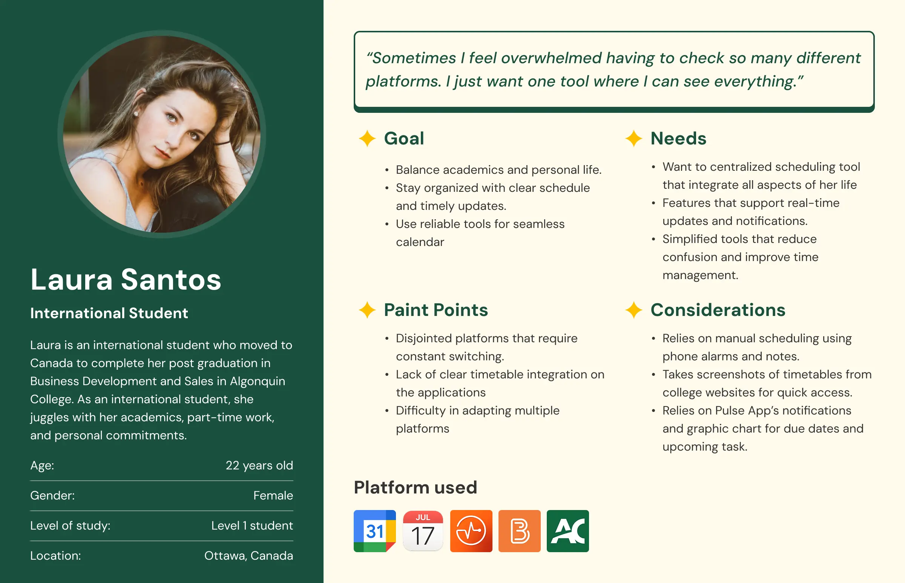
4. Limitations
Although this study provides valuable insights into the experiences of Level 1 students using college-provided calendars, it has certain limitations. The survey primarily gathered input from Level 1 international students, with only two out of ten participants being domestic students.
5. Learnings
This research study was my first experience conducting a full research process, and it was a valuable learning opportunity. I developed essential skills in creating a research plan and learned how to design interview protocols properly to generate useful insights.
Summary of Research Process:
Step 1: Developed a research plan.
Step 2: Designed surveys, interview protocols, and consent forms, then conduct a pilot interview.
Step 3: Launched the survey to screen and identify suitable participants for interviews.